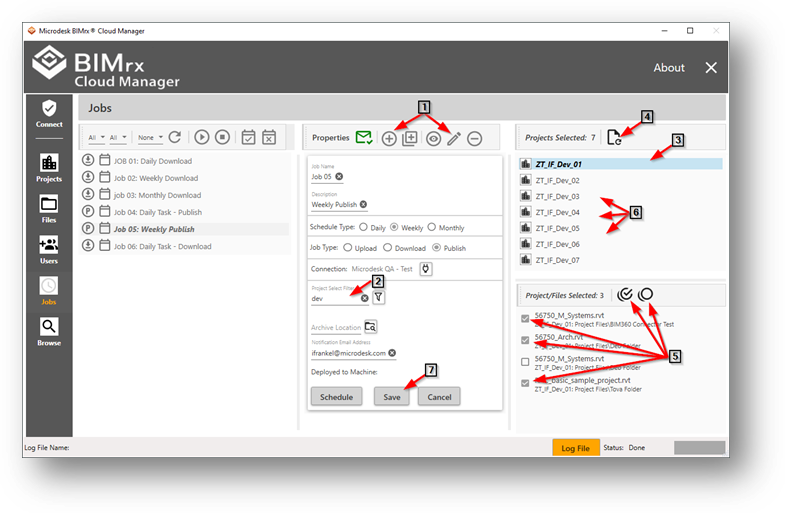
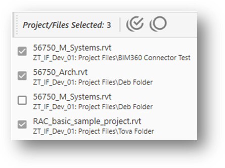

Individual File Selection—Publish
Project/Files selection applies only to Publish Jobs and, in effect, defines the files the Job publishes on execution. When saving a Publish Job, the system issues a warning when no files have been selected but allows the Job to be saved. However, when deploying a Publish Job with no files selected it will issue a message and will not allow the Job to be deployed. In other words, at least one file must be selected before BIMrx® Cloud Manager will allow the Publish Job to be deployed.
Selecting files to be published is a multi-step process as follows. Steps 1 and 7 shown below—entering add/edit mode then saving—obviously also apply to the Individual and Wildcard-Only selection methods described above.

- Place the Job into Edit mode or perform as part of initially adding the Job.
Saved project and project/file selections display properly when viewing the Job—including navigating between projects—as is the case with all other Job data. However, for additions and changes to occur the edit and save process must first take place.
- Define the list of projects from which to choose the files.
This is the same filter-driven process used when specifying projects for Download Jobs. Here, however, the end result is a specific list of files. Accordingly, if extra projects are selected that either have no eligible files or contain none that matter, they may be safely ignored since their presence on the project list has no adverse impact. All that matters here is the list of files to which the project provides access.
- Select a specific project from which to choose files.
Click on a project to provide a list of its files. Only one project at a time can be selected.
- Add/Refresh the list of Revit® Cloud Workshared models for the project.
Press the Add/Refresh the Cloud Workshared Model list button. This button invokes a process that goes out to BIM 360® and reads through all folders for the project and examines its files. It then displays all Revit® Cloud Workshared models, regardless of whether a model currently requires publishing or not. Since a single list of models for each project is presented, thereby flattening the folder hierarchy, the folder path for each model is displayed along with the file name and project.

No other models or other files are displayed. Please note, that when refreshing the list any previous selections will be discarded.
- Select one or more models from the project list by clicking individual models and/or using the Check All/Uncheck All buttons.
With the list of eligible models for the project displayed, the next step is to select those which will be published by the Job on execution. This can be done one by one by checking each individual file; by doing a mass selection using the Select all files button; by selecting all then unselecting some; and by pressing the Unselect all files button and beginning the process all over again. The number of selected files is displayed at the top of the panel.
- Repeat the process for as many projects as required.
Once the selection has been completed for one project, then selection can begin on a second project. This process may be repeated for as many projects as necessary. Also, there is no harm, performance penalty, or other downside to simply leaving one or more projects empty as required.
- Save the Job.
With all entries complete, the Job must be saved. Failure to save will discard all changes made. If the selection process is incomplete and needs to continue later, it should still be saved to ensure no work is lost. The selection process can continue later, allowing the user to pick up where they left off previously, without a penalty incurred.